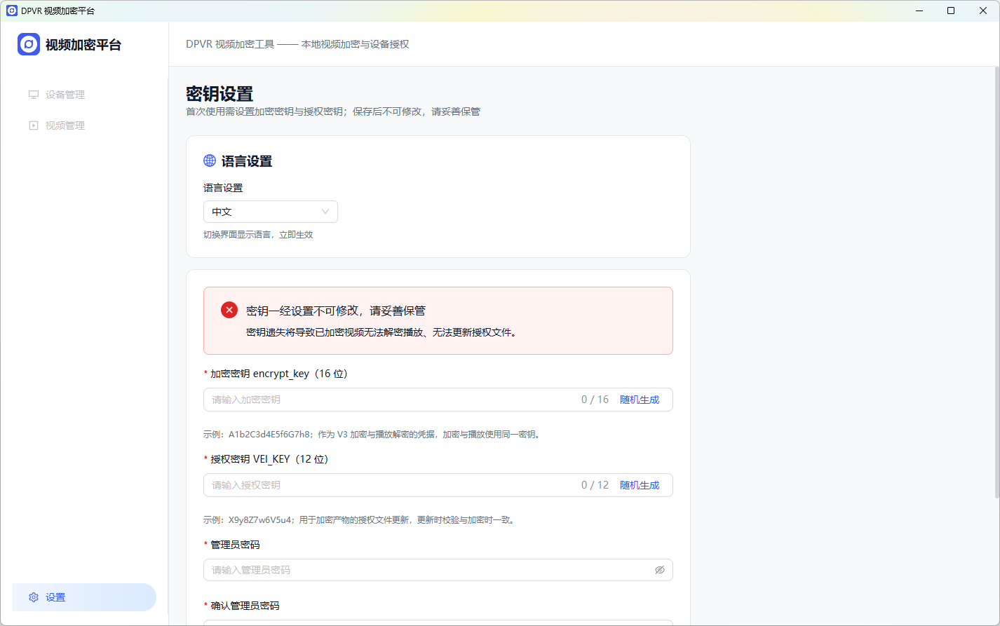
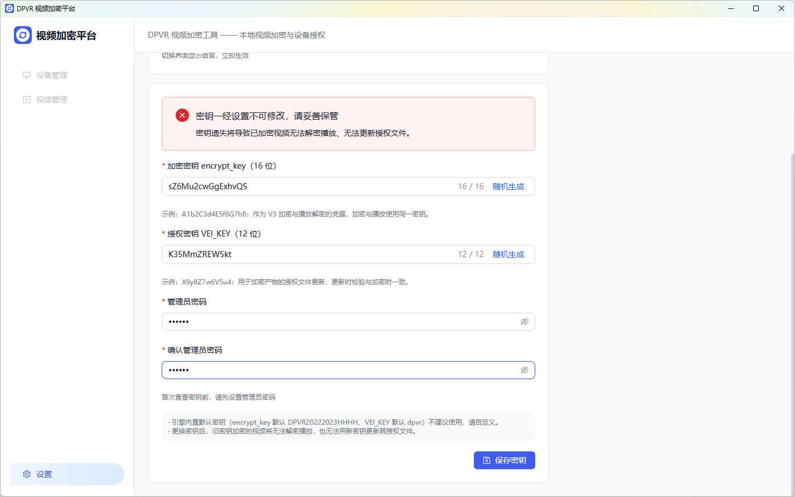
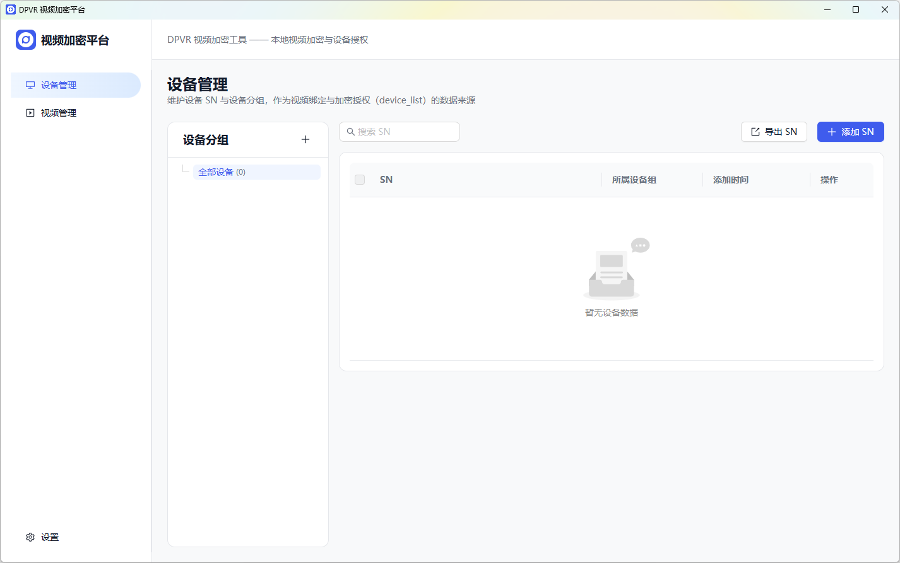
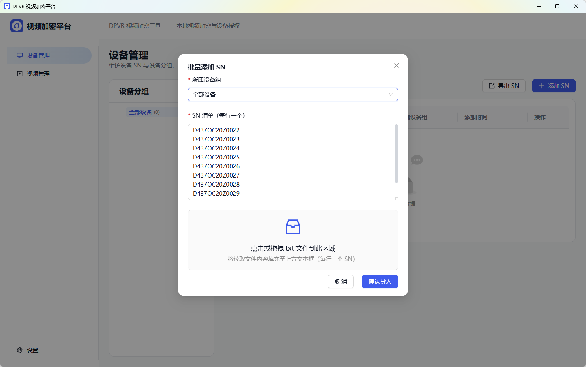
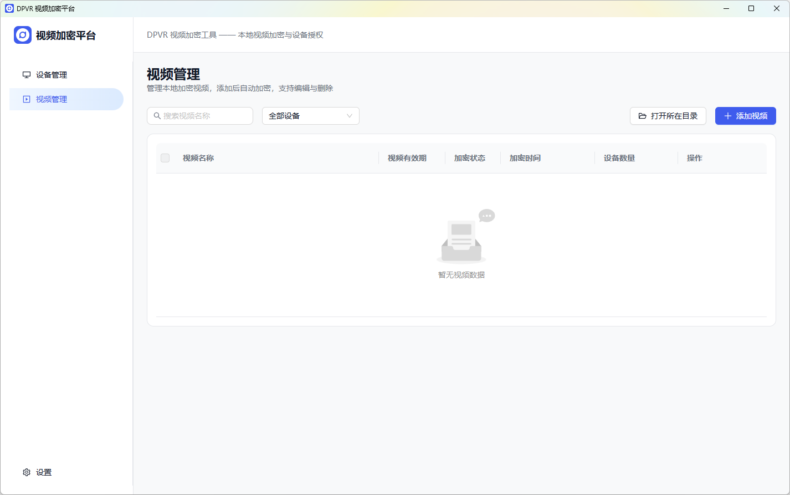
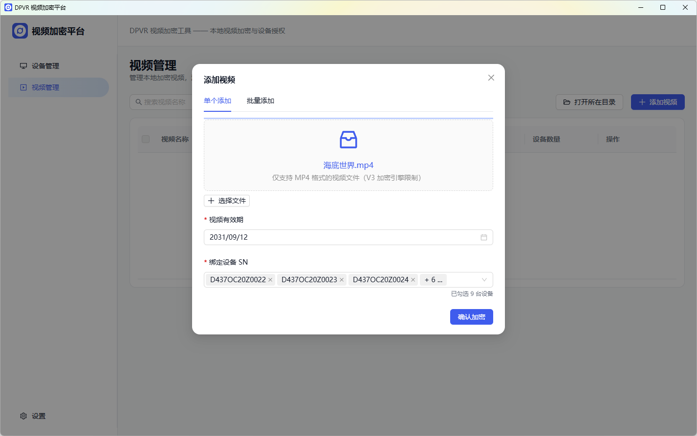
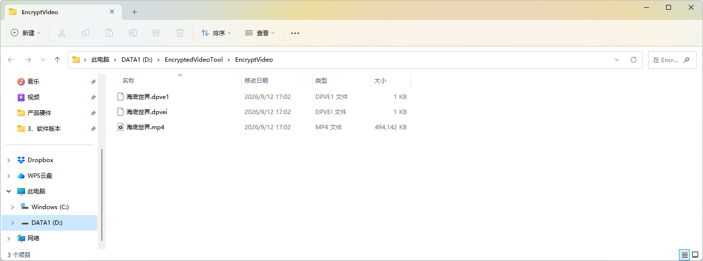

English
DPVR 视频加密工具 · 使用说明
本地视频加密与设备授权工具 —— 密钥设置 → 设备 SN 管理 → 视频添加与加密 → 部署到 VR 一体机
版本 2.0.0
Windows 10/11 x64
中文 / English
本地运行 · 无需联网
一、安装与启动
1
双击运行安装包
DPVR视频加密工具-Setup-2.0.0.exe。2
按向导提示完成安装，安装完成可勾选 运行 DPVR 视频加密平台 直接启动。
3
启动方式(任选其一)：① 双击桌面或开始菜单快捷方式 「DPVR 视频加密平台」；② 双击安装目录中的
EncryptedVideoTool.exe。提示:软件为本地单机工具,所有功能(密钥、设备、视频)均保存在本机,断网环境可完整使用。
二、首次启动设置(语言 / 密钥 / 管理员密码)
首次启动会强制进入设置页,需依次完成语言确认、密钥配置与管理员密码设置后才能使用其他功能。

2.1 语言设置
1
系统默认按当前系统语言选择:中文系统 → 中文,非中文系统 → English。
2
可在设置页顶部语言卡中随时切换中文 / English,切换即时生效。
2.2 密钥配置
| 密钥 | 规范 | 用途 | 示例 |
|---|---|---|---|
| 加密密钥 encrypt_key | 16 位,仅英文字母与数字 | 视频加密与播放解密的凭据 | A1b2C3d4E5f6G7h8 |
| 授权密钥 VEI_KEY | 12 位,仅英文字母与数字 | 授权文件更新凭据 | X9y8Z7w6V5u4 |
1
在对应输入框手动输入密钥,或点击 随机生成 一键生成符合规范的值(输入框旁提供规范示例)。
2
设置管理员密码(至少 6 位)并再次输入确认 —— 用于日后进入设置页查看密钥。
3
点击 保存密钥,提示"密钥已保存"后自动进入设备管理页。

重要:密钥一经保存不可修改,请务必妥善保管。密钥遗失将导致已加密视频无法解密播放、无法更新授权文件。
说明:密钥请勿使用引擎内置默认值;保存后设置页中的密钥以脱敏方式显示,需输入正确的管理员密码点击「查看密钥」才能查看明文。
三、设备管理(设备组与 SN)
设备管理用于维护 VR 一体机的设备序列号(SN)清单,是视频绑定授权的数据来源。页面左侧为设备组树(根节点「全部设备」显示 SN 总数,并显示各分组数量徽标),右侧为SN 表格(SN、所属设备组、添加时间)。

3.1 设备分组管理
- 新建分组:点击「新建分组」,输入名称(必填、不可重名)。
- 编辑分组:对分组改名。
- 删除分组:二次确认后删除,组内 SN 自动保留在「全部设备」根级,不会丢失。
3.2 添加 SN
单台添加:点击 添加 SN → 输入 SN、选择所属设备分组(可选「全部设备」即不分组)→ 确定。
- SN 格式要求:2–120 位,仅支持字母、数字及
. _ : -,不能包含空格。 - 同一分组内 SN 不可重复。
批量添加:点击 批量添加 → 粘贴文本或拖入 txt 文件(每行一个 SN)→ 选择所属分组 → 导入。系统逐行校验并去重,结果反馈"成功 N 个、重复 M 个、格式错误 K 个"。

3.3 编辑 / 删除 SN
- 编辑:行内「编辑」按钮,可修改 SN 值与所属分组。
- 删除:勾选一个或多个 SN 后点击「批量删除」(或单行删除),二次确认后删除;若 SN 已被视频绑定,删除后将同步解除所有视频的绑定关系。
3.4 导出 SN
点击 导出 SN:选中「全部设备」时导出全部 SN,选中某分组时仅导出该组 SN,导出为 txt 文件(每行一个)。
四、视频管理(添加 / 加密 / 编辑 / 删除)
视频管理页展示本机视频清单,支持添加、加密、编辑、删除与筛选。

4.1 列表信息
| 列 | 说明 |
|---|---|
| 视频文件名 | 添加时使用的视频文件名(去扩展名) |
| 视频有效期 | 授权有效截止日期;已过期显示红色 |
| 加密状态 | 未加密(灰)/ 加密中(蓝)/ 成功(绿)/ 失败(红) |
| 加密时间 | 加密完成时间;未加密显示 - |
| 设备数量 | 该视频绑定的设备台数;点击「详情」展开绑定的 SN 清单 |
4.2 添加视频并加密(单个)
1
点击 添加视频,选择「单个添加」;点击选择或拖入 MP4 视频文件(仅支持 MP4)。
2
设置视频有效期:日历选择,默认为当前日期 +5 年,不能早于今天。
3
绑定设备 SN(必选):在下拉树中勾选设备;支持勾选设备组整组全选,并实时统计已勾选设备数。
4
点击 确认加密 —— 保存视频并自动开始加密,进度弹窗显示进度条与整数百分比(弹窗不可点击遮罩关闭)。
5
加密完成后列表状态变为「成功」并记录加密时间;产物保存至安装目录
EncryptVideo 文件夹。截图占位:单个添加视频弹窗与加密进度弹窗
提示:若
EncryptVideo 中已存在同名视频文件(或清单中已有同名视频),该视频将无法添加并给出提示,请先删除或改名源文件。4.3 批量添加
1
点击 添加视频 → 「批量添加」,将多个视频文件拖入窗口。
2
在统一设置区设置本批共用的视频有效期与绑定设备 SN(必选),应用至本批全部视频。
3
确认预览清单后点击 确认加密,视频逐个自动加密;非 MP4 文件被自动过滤并提示数量。

4.4 筛选与搜索
- 按设备分组筛选:筛选下拉默认「全部设备」(展示全部视频),可选择任意自建分组,仅显示绑定了该组内 SN 的视频。
- 按文件名搜索:搜索框输入文件名关键字,即时过滤列表。
4.5 编辑视频(保存并加密)
1
点击行内「编辑」,可修改有效期与绑定设备 SN。
2
点击 保存并加密:保存修改后自动触发重新加密,以新的有效期与设备清单生成授权。
说明:编辑后重新加密会覆盖原有加密产物。
4.6 删除视频
- 单个删除:行内「删除」→ 二次确认(含"此操作不可恢复"红字警告)。
- 批量删除:勾选多个视频(加密中的视频不可勾选)→「批量删除」→ 二次确认。
- 删除会同步删除本机清单记录与
EncryptVideo文件夹中对应的加密视频文件。
4.7 打开所在目录
点击「打开所在目录」,在资源管理器中打开安装目录下的 EncryptVideo 文件夹。
五、加密产物与播放说明
加密成功后,<安装目录>\EncryptVideo 中生成三类文件:
| 文件 | 说明 |
|---|---|
*.dpve1 + *.mp4 |
加密视频数据与封装文件 |
*.dpvei |
授权文件(包含有效期与绑定设备 SN 的授权信息) |
- V3 加密仅支持 MP4 封装的源视频。
- 加密视频仅可由 Dpvr VideoPlayer 解密播放。
- 授权方式:授权日期授权(视频有效期,到期不可播放)+ 设备序列号鉴权(仅绑定的设备 SN 可播放)。

六、注意事项与常见提示
| 场景 | 说明 |
|---|---|
| 提示"请先在设置中配置密钥" | 密钥未配置,请到「设置」完成密钥配置后再加密 |
| 提示"仅支持 MP4 格式的视频文件" | 源视频非 MP4 封装,请先转码为 MP4 |
| 提示"EncryptVideo 中已存在同名文件" | 存在同名产物,删除旧视频或更换文件名后重试 |
| 提示"有效期不能早于今天" | 重新选择当天或之后的日期 |
| 忘记管理员密码 | 无法查看密钥明文;请务必牢记管理员密码与密钥 |
| 更换/重装系统 | 本地数据(密钥、设备、清单)不会自动迁移,请提前做好备份规划 |
| 数据存储位置 | 配置与清单数据保存在本机用户数据目录,加密产物在安装目录 EncryptVideo 文件夹 |
安全提醒:加密密钥与授权密钥是视频解密的唯一凭据,一经设置不可修改、不可恢复,请妥善保管。